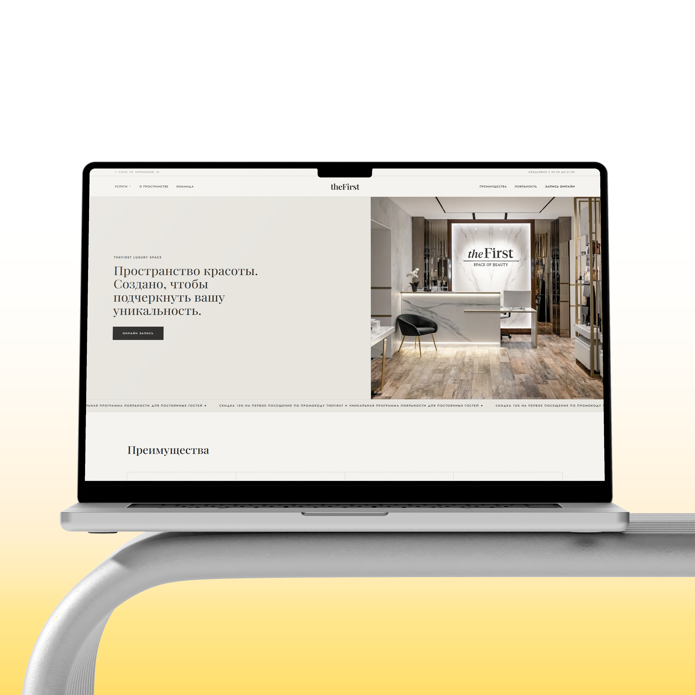

Сайт для theFirst

О проекте
Мы создали премиальный сайт для пространства красоты в г. Сочи, который подчеркивает уникальность бренда и формирует доверие с первых секунд. Интуитивная навигация, удобная онлайн-запись и акцент на премиальные услуги делают взаимодействие с сайтом комфортным и эффективным.
Перейти к онлайн-записиЗадача и
Решение
Цель:
Разработать современный сайт для премиального beauty-пространства, который покажет экспертность команды, разнообразие услуг и уникальные предложения клуба лояльности. Сайт должен был вызвать доверие, подчеркнуть премиальный сервис и обеспечить простую запись на любую услугу.
Решение:
— Мы построили структуру сайта вокруг ключевых сценариев пользователя: знакомство с пространством → презентация команды и услуг → уникальные предложения → запись.
— Визуально сайт оформлен в светлой и воздушной премиальной гамме, с крупными фотографиями, интерактивными блоками и микроанимациями. Особое внимание уделено: демонстрации преимуществ (мастера-эксперты, премиум косметика, приватность, безупречный сервис), различным направлениям услуг с возможностью онлайн-записи, а также закрытой программе лояльности с кэшбеком, подарками и приоритетной записью для VIP-гостей.
— Форма записи и контактов интегрирована в ключевые блоки, что сокращает путь пользователя до подтверждения визита. Сайт подчеркивает премиальность бренда и создает ощущение эксклюзивного пространства красоты, доступного для каждого гостя.